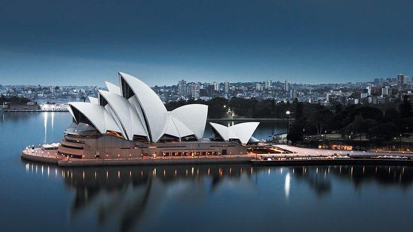

Tokyo Skytree
Tokyo Skytree adalah sebuah menara siaran, observasi, dan rumah makan di Sumida, Tokyo, Jepang. Menara ini telah menjadi struktur tertinggi di Jepang sejak tahun 2010, dan mencapai ketinggian akhir 634 m pada bulan Maret 2011, sekaligus menjadikannya sebagai menara tertinggi di dunia, melampaui Menara Kanton di Guangzhou, Tiongkok, dan merupakan struktur tertinggi nomor dua di dunia setelah Burj Khalifa (829,84 m).

Sydney Opera House
Gedung Opera Sydney di Sydney, New South Wales, Australia adalah salah satu bangunan abad ke-20 yang paling unik dan terkenal. Gedung ini terletak di Bennelong Point di Sydney Harbour dekat Sydney Harbour Bridge dan pemandangan kedua bangunan ini menjadi ikon tersendiri bagi Australia.